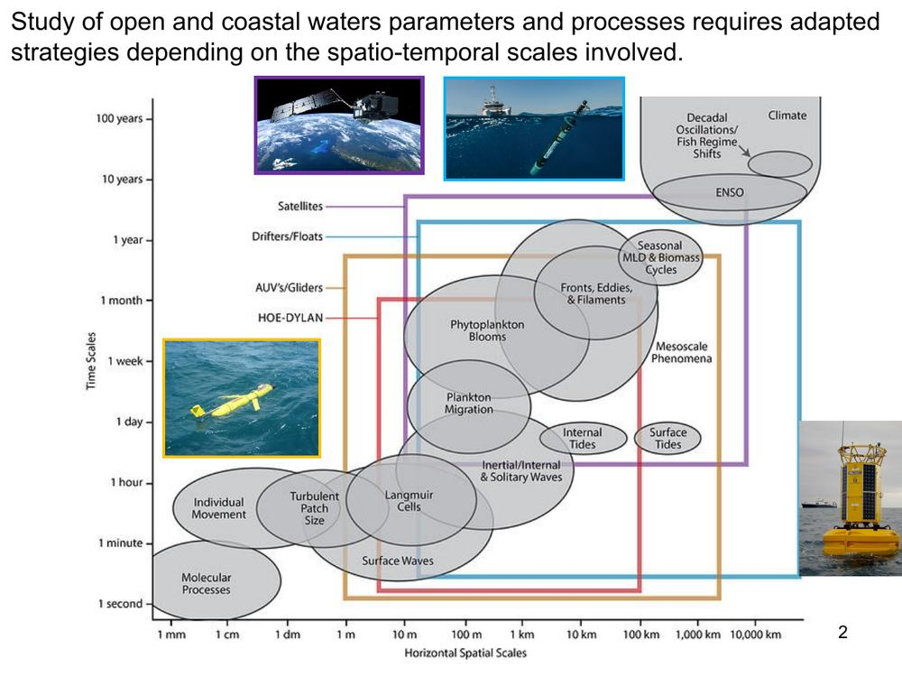
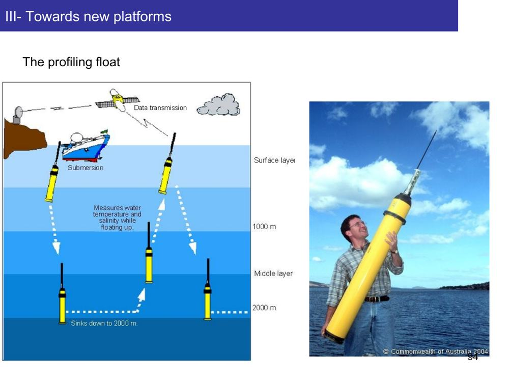
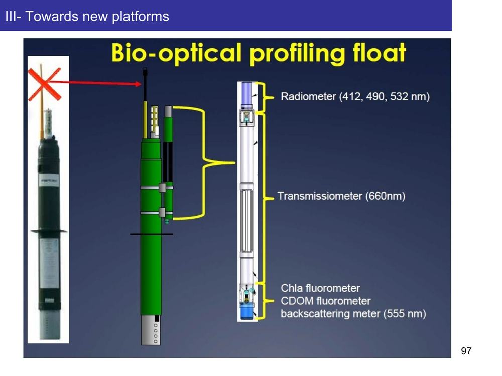
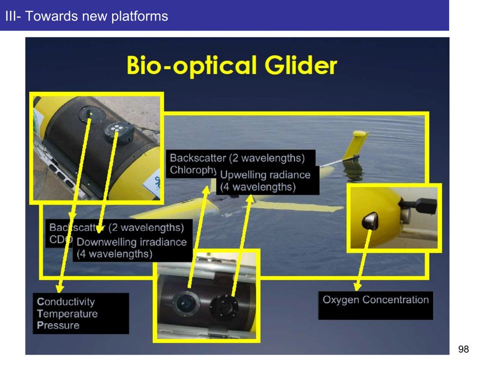
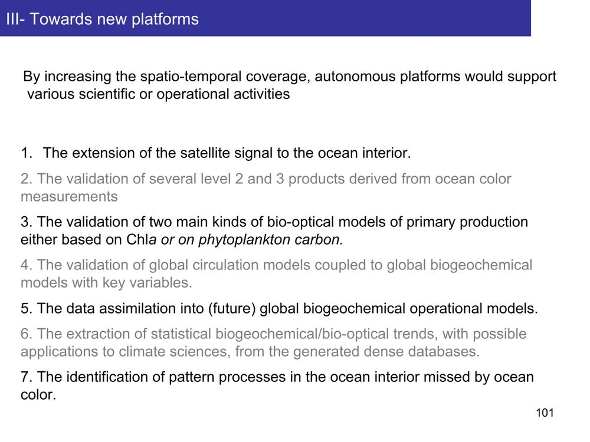
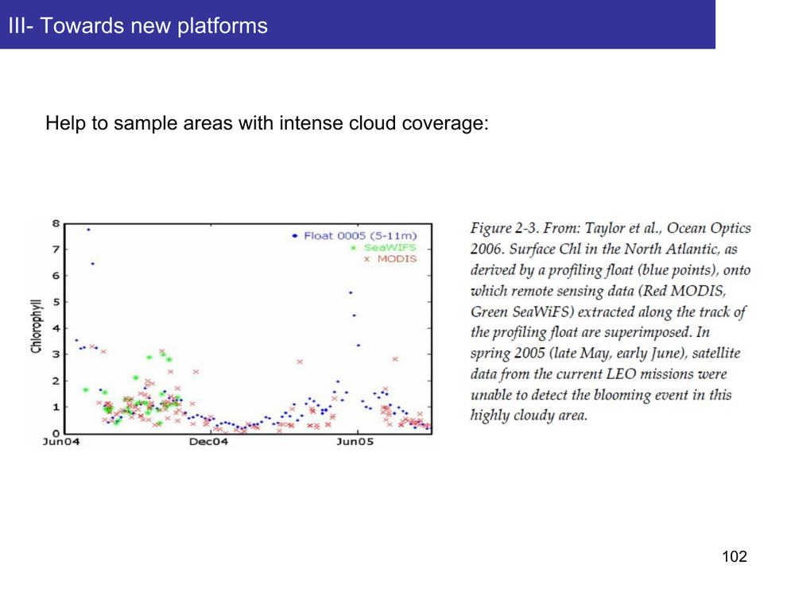
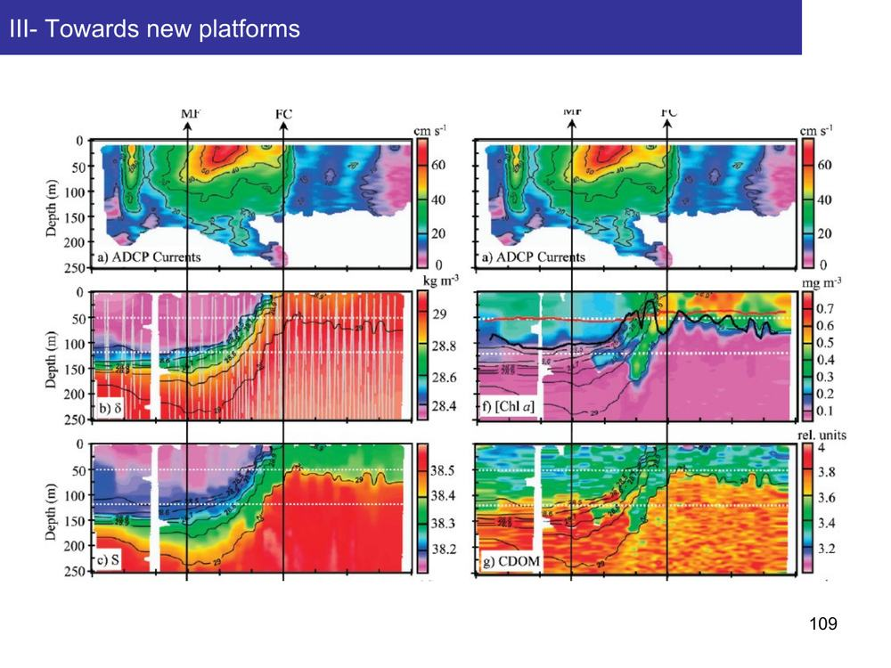
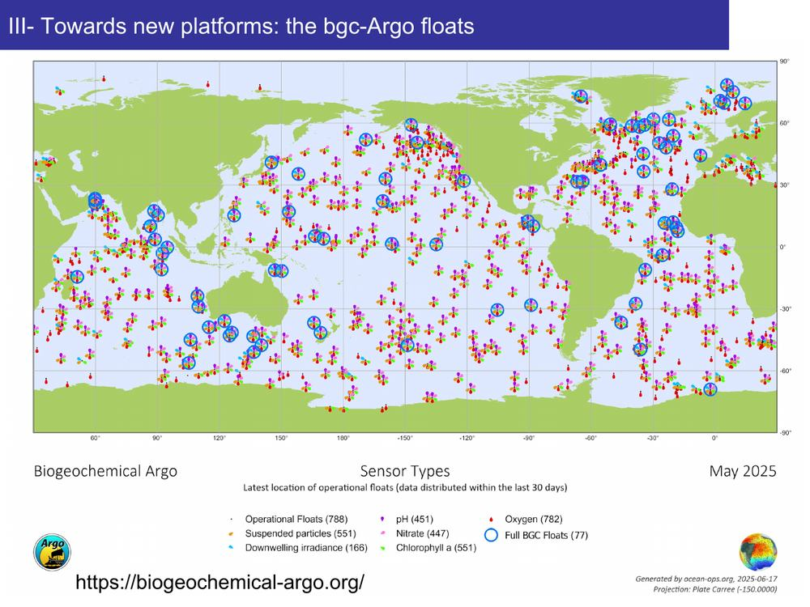
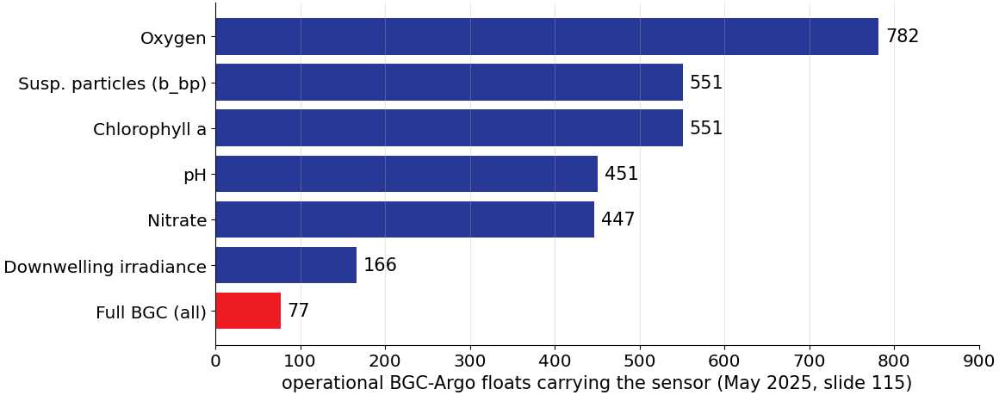

H · New platforms
Floats, gliders, BGC-Argo and other autonomous platforms (slides 85–120)
An under-sampled ocean

Lecture slide 2
- Scales from mm to 10 000 km
- Seconds to 100 years
- No single platform covers all
- Munk (2000): “a century of undersampling”
Profiling float

Lecture slide 94
- Sinks to 2000 m
- Measures while rising
- Data sent by satellite
Bio-optical profiling float

Lecture slide 97
- Radiometer 412/490/532
- Transmissometer 660 nm
- Chl and CDOM fluorometers
- Backscatter 555 nm
Bio-optical glider

Lecture slide 98
- bbp, Chl, CDOM
- Ed and Lu at 4 λ
- CTD and oxygen
Seven contributions of autonomous platforms

Lecture slide 101
- Extend the satellite signal inward
- Validate products and models
- Assimilate into models
- Trends; interior patterns
Sampling under clouds and in winter

Lecture slide 102
- Float versus SeaWiFS and MODIS
- Spring 2005 bloom missed from space
- Slide 103: winter mixing, South Pacific Gyre
Gliders across a front

Lecture slide 109
- Currents, density, salinity
- Chl and CDOM sections
- Ligurian Sea, Jan 2007
Argo and BGC-Argo

Lecture slide 115 (May 2025)
- Argo: 4153 floats (30 Jun 2025)
- BGC-Argo operational: 788
- Oxygen 782, bbp 551
- Full BGC floats: 77
BGC-Argo sensors

Own plot of the counts read from lecture slide 115 (May 2025)
Key points
- Ocean undersampled in space and time
- Floats and gliders add the vertical dimension
- Seven contributions (slide 101)
- BGC-Argo: oxygen on nearly all, optics on 550–790